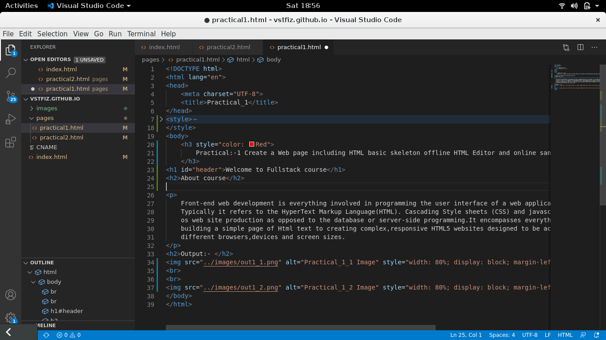
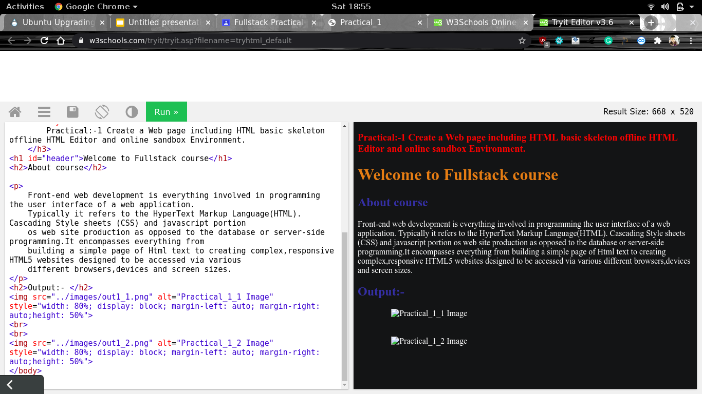

Front-end web development is everything involved in programming the user interface of a web application. Typically it refers to the HyperText Markup Language(HTML). Cascading Style sheets (CSS) and javascript portion os web site production as opposed to the database or server-side programming.It encompasses everything from building a simple page of Html text to creating complex,responsive HTML5 websites designed to be accessed via various different browsers,devices and screen sizes.
Offline Code Editor
Online Code Editor
